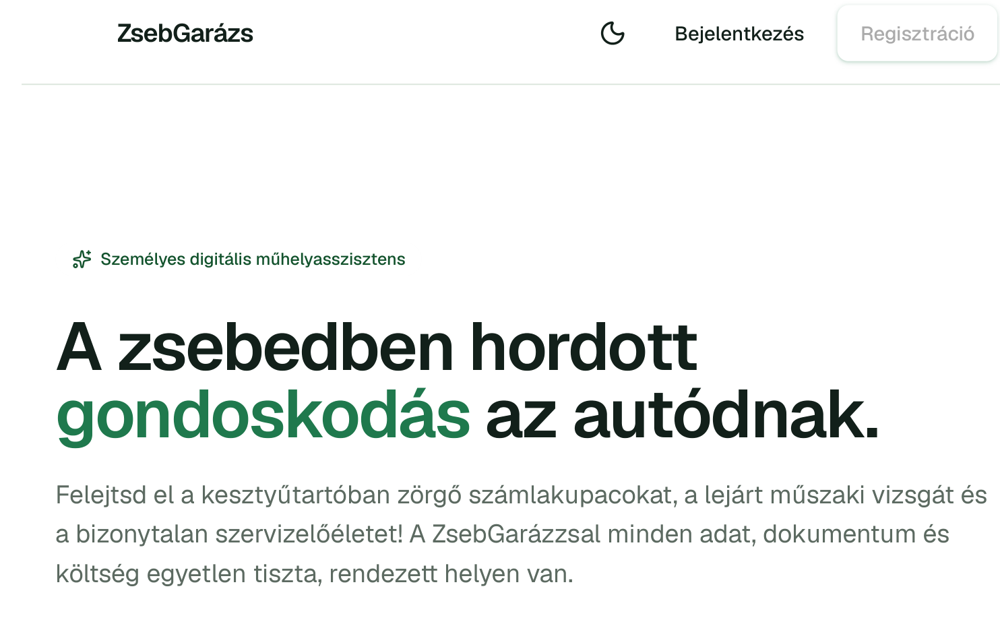

Kocka 01 · zsebgarazs.hu
ZsebGarázs
Autós költségkövetés és digitális szervizkönyv
Költségek, szervizek és okmány-lejáratok egy helyen. Emlékeztetőt küld a műszaki vizsga előtt, eladáskor pedig PDF szervizkönyvet nyomtat.
- Webalkalmazás
- Android app
- Előfizetés